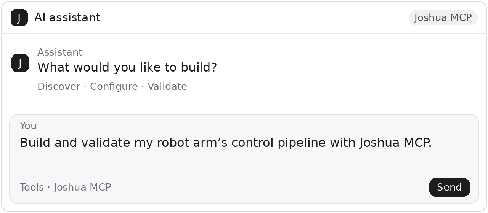
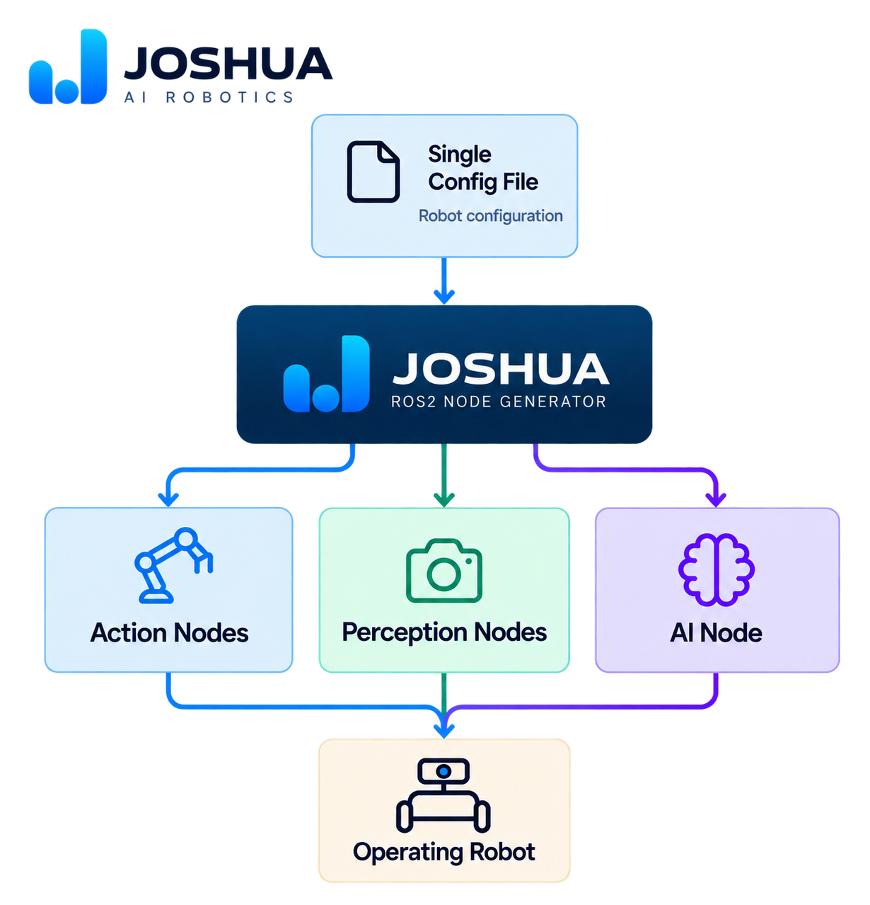

JOSHUA
Joint Open-Source Hub for Universal Automation
Project Joshua is an open-source robotics framework for building robots from reusable components. Built on ROS 2, it brings hardware drivers, control, perception, and AI into one configuration-driven stack.
Define your robot’s devices and pipelines in a single configuration, then reuse the same interfaces across different setups. Explore the catalog to see what is integrated, what has been tested, and under which conditions.

Use your AI assistant with Joshua MCP to discover hardware, prepare configurations, and validate your robot setup.

Joshua in Numbers
Hardware models and device software integrated into Joshua. Search below to explore integrations, candidates, and their supporting records.
Hardware Integrated
Device Software Integrated
About these numbers
Coverage uses dated vendor research plus current catalog additions, not a worldwide total. Generic families remain searchable without being counted again alongside exact models. Search includes candidates whose feasibility has not yet been assessed. The counts show implementations confirmed by the linked Joshua source; physical tests and attributed reviews are recorded separately in each device file.
Device software includes drivers, SDKs, sensor capture, hardware control interfaces, and device communication. Pybricks is a bench-control tool; SOES is an opt-in firmware path.